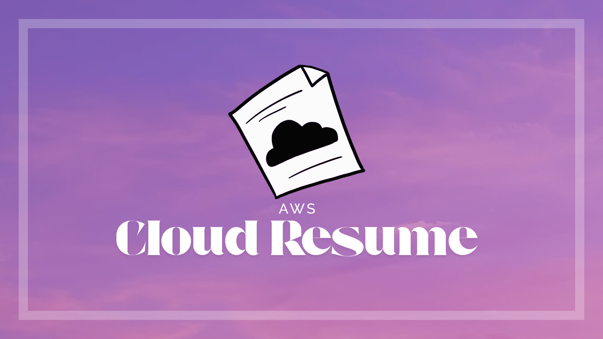

Puneeth Y
An Aspiring DevOps Engineer & Cloud Architect crafting resilient, automated, and scalable infrastructure for tomorrow's technology.
About Me
Howdy, I’m an aspiring DevOps engineer with a passion for
automation and system orchestration.
I love building efficient and reliable infrastructure using tools
like Docker, Kubernetes, and AWS. Whether it’s writing
Infrastructure as Code, managing containers, or setting up CI/CD
pipelines, I’m all about creating systems that make life easier
for developers, helping them ship faster, safer, and with
confidence.
Outside of tech, I enjoy photography and often spend time exploring nature with my camera, capturing moments when I can.
<1
Years of Experience
0
Visitors
Powered by AWS Lambda
100%
Commitment to Automation
Recommendations
What colleagues and mentors have to say about working with me.
Dhakshin Kumar
Technical Project Manager at HCLSoftware
"I worked with Puneeth to create the migration plan for moving our projects to a new Packaged Business Capabilities (PBC) architecture. During this time, he quickly developed a deep understanding of the projects and their architectural requirements. His knowledge of Docker and Kubernetes was truly commendable and worth highlighting. Even as a fresher, he took ownership of PoC setups, thoroughly evaluating various Kubernetes deployment architectures and giving valuable feedback on the best approach. While I brought strong client domain expertise as the more experienced member, Puneeth’s prior exposure to modern cloud-native tools made us a powerful two-person migration team. This combination of strengths was key to our success. I truly enjoyed working with him and am confident he will be a valuable asset to your organization. I wholeheartedly recommend him and wish him the very best in his future endeavors."
Jeroen Willemsen
Principal security architect, OWASP Wrongsecrets lead
"I had the pleasure of working with Puneeth on OWASP WrongSecrets in 2023. Puneeth joined as a volunteer with very little knowledge about most of the project back then. Still, that did not hold back Puneeth of creating very valuable additions to our project. I was impressed by how he studied the technologies we used and ended up creating very valuable contributions which we still use today. He shows to be an avid learner, have great perseverance, a good communicator, and a great guy to work with!"
My skills
I have hands-on experience with HTML, CSS, JavaScript, Python, and
Golang. I'm also familiar with frameworks and libraries such as
React, .NET, Django, and Node.js, often integrating them in
full-stack development projects. On the data side, I’ve worked
with both relational and non-relational databases, including MSSQL
and MongoDB. I’ve also gained practical experience with AWS
services, particularly for deploying and scaling cloud-native
applications.
My infrastructure knowledge includes working with Kubernetes,
Helm, Terraform, Prometheus, and Grafana to manage, deploy, and
monitor applications efficiently.
Curious for more? Feel free to check out my CV along the way!
Code
Build
Test
Deploy
Awards & Certifications
A collection of certifications and recognitions I’ve received along my learning and DevOps journey.
Top 1% in GSSoC'ext 2024
1st Place in the department-level mini-project
AZ-305 Microsoft Azure Architect Design Prerequisites
AWS Cloud Practitioner Essentials
Postman API Fundamentals Student Expert
Featured Projects
A selection of my recent software and DevOps projects. Hover over each card to see more details.
Work Experience
My professional journey in the world of DevOps and cloud engineering.
HCLSoftware
Mar 2025 - PresentIntern
Contributed as a primary team member in architecting the upcoming cloud-native migration blueprint, focusing on defining the target architecture, technology stack, and deployment patterns tailored for future scalability and maintainability. Led several targeted proofs of concept (PoCs) to validate new tools, frameworks, and deployment strategies, directly influencing final architecture decisions and shaping the release automation framework later adopted in the company's product.
GirlScript Summer of Code (GSSoC-ext'24)
Oct 2024 - Nov 2024Open Source Contributor
Actively contributed to open-source repositories as part of GSSoC-ext 2024, demonstrating strong coding proficiency, collaboration, and problem-solving abilities. Achieved a top ranking of 281 out of 60,000 participants, reflecting high technical competence and consistent engagement throughout the program.
My Blog
Sharing my journey and insights in cloud computing and DevOps.

My Attempt at the AWS Cloud Resume Challenge
Curious about how the architecture behind this website is structured using modern DevOps practices? I break it all down in my blog post as part of the Cloud Resume Challenge. From CI/CD to infrastructure as code, it's all in there. Be sure to check it out!
Photography Portfolio
Beyond the code, I enjoy capturing the world through my lens. Here's a glimpse of my creative side.